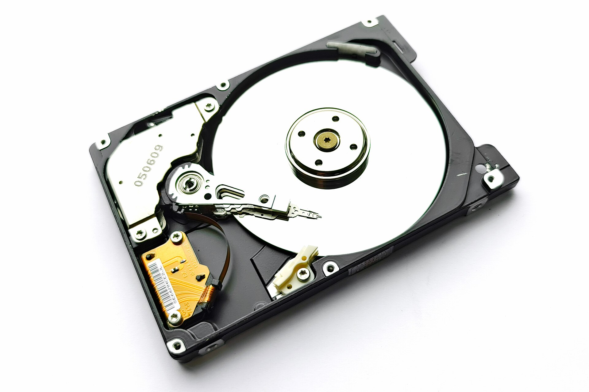

Asynchronous Traversal & Sector Awareness
Disk scanning executes in a dedicated .NET background engine utilizing asynchronous file-enumeration APIs. By batching metadata requests, ArborGraph prevents head thrashing on mechanical disks and maximizes throughput on solid-state NVMe drives.